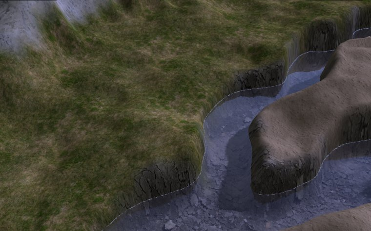

Water
OmegaEngine provides water rendering with reflections and refractions.

Rendering passes
Water rendering uses a multi-pass rendering technique:
- Refraction render - Renders the scene parts below the water surface, creating the refraction effect (what you see through the water)
- Reflection render - Renders the scene parts above the water surface with a mirrored camera, creating the reflection effect (what's reflected on the water surface)
- Water surface - Renders the water plane itself, combining the refracted and reflected views with a scrolling surface texture and normal map (WaterShader)
- Main render - Render the scene normally, including the water surface
graph LR
Scene --> RefractionRender[Refraction render]
Scene --> ReflectionRender[Reflection render]
RefractionRender --> WaterSurface[Water surface]
ReflectionRender --> WaterSurface
SurfaceTexture[Surface texture] --> WaterSurface
NormalMap[Normal map] --> WaterSurface
WaterSurface --> MainRender[Main render]
Scene --> MainRender[Main render]
MainRender --> Final[Final image]
Setup
To enable the water effect, call Water.SetupChildViews(). This automatically creates and registers the necessary views.
var water = new Water(engine, size: new(1000, 1000))
{
Position = new(0, 5, 0), // Y = water height
Name = "Lake"
};
scene.Positionables.Add(water);
water.SetupChildViews(view, clipTolerance: 2.0);
Tip
clipTolerance determines how far to shift the clip plane along its normal vector. Increase this value if you see graphical glitches at water edges.
Warning
Multiple water planes at the same height share the same refraction and reflection views for efficiency. Avoid creating water planes at different heights to limit the performance impact.